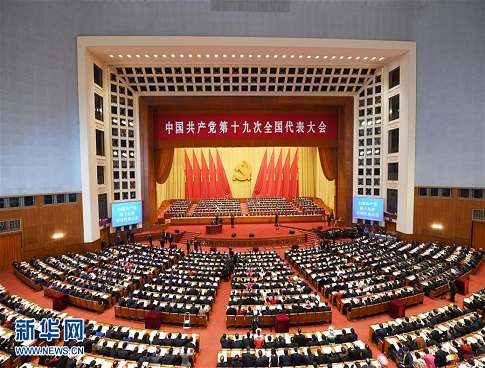
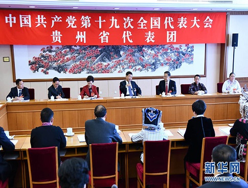
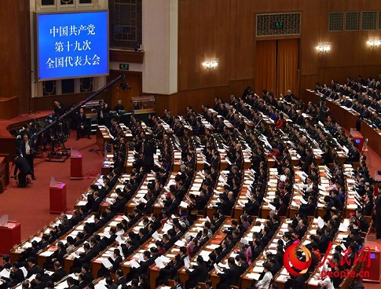
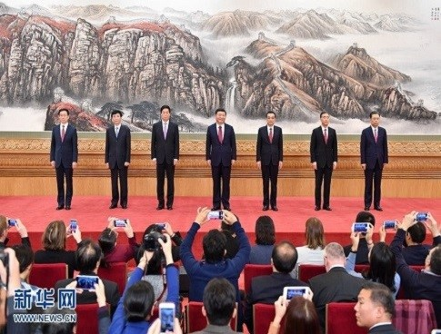

习近平代表第十八届中央委员会向大会作报告
中国共产党第十九次全国代表大会在北京人民大会堂隆重开幕
习近平同志参加党的十九大贵州省代表团讨论
中国共产党第十九次全国代表大会闭幕会现场
十九届中央政治局常委同中外记者见面
- 习近平：以永远在路上的执着把从严治党引向深入
- 习近平：以时不我待只争朝夕的精神投入工作 开创新时代中国特色社会主义事业新局面2018-01-06
- 中央经济工作会议举行 习近平李克强作重要讲话2017-12-21
- 习近平近日作出重要指示强调：纠正“四风”不能止步 作风建设永远在路上2017-12-12
- 中共中央办公厅转发《中央宣传部、中央组织部关于认真组织学习〈习近平谈治国理政〉第二卷的通知》2017-11-22
- 栗战书：全面把握中国特色社会主义进入新时代
- 王沪宁：全面准确宣讲党的十九大精神 增强宣讲活动针对性和实效性
- 刘云山：深入学习贯彻习近平新时代中国特色社会主义思想
- 习近平：决胜全面建成小康社会 夺取新时代中国特色社会主义伟大胜利——在中国共产党第十九次全国代表大会上的报告
- 学习贯彻党的十九大精神中央宣讲团成立
- 12/05
- 12/05
- 11/30
- 11/29
- 11/14
- 11/14
- 11/07
- 10/18
保定市科学技术协会关于学习宣传贯彻党的十九大精神的实施方案
党的十九大是在全面建成小康社会决胜阶段、中国特色社会主义进入新时代的关键时期召开的一次重要会议，在我们党和国家的发展进程中具有极其重大的历史意义。学习宣传贯彻好党的十九大精神，是当前和今后一个时期首要的政治任务。为进一步深入学习宣传贯彻落实党的十九大精神，切实把全市各条战线上的广大科技工作者、科协系统广大党员干部的思想和行动统一到党的十九大精神上来，把力量凝聚到党的十九大确定的各项任务上来，根据中央、省、市安排部署，结合科协工作实际，制定学习宣传贯彻党的十九大精神实施方案如下。
》全文市科协系统下发《通知》认真学习宣传贯彻党的十九大精神
为深入学习宣传贯彻党的十九大精神，切实把思想统一到十九大精神上来，把力量凝聚到十九大确定的各项任务上来，根据《中共中央关于认真学习宣传贯彻党的十九大精神的决定》（中发〔2017〕28号）、《中共保定市委关于全面兴起学习宣传贯彻党的十九大精神热潮的通知》（保发〔2017〕21号）、《中共保定市委办公厅关于认真做好党的十九大精神学习宣传工作的实施方案的通知》（保办发〔2017〕26号）精神，就全市科协系统学习宣传贯彻工作下发《关于认真学习宣传贯彻党的十九大精神通知》（以下简称《通知》）。
》全文市科协机关党支部组织党员代表举行重温入党誓词主题活动
11月30日，市科协机关党支部党员代表在党组成员、副主席王坤燕带领下，来到冉庄地道战遗址，再次掀起了学习党的十九大精神的热潮，面对党旗，举行了重温入党誓词主题活动。
》全文保定市科协下好“十个工夫”学习贯彻十九大精神
为认真学习宣传贯彻党的十九大精神，保定市科协于11月14日召开专题会，组织全系统各条战线上的科技工作者认真学习宣传党的十九大精神，倡导广大科技工作者切实担负起新时代科协工作新使命，下好“十个工夫”，促进十九大精神在科协组织与科协工作中落实落地、开花结果，为决胜全面建成小康社会、助推京津保地区率先联动发展贡献力量。
》全文保定市科协召开全委（扩大会）学习宣传贯彻党的十九大精神
11月14日，保定市科协召开全委（扩大）会学习宣传贯彻党的十九大精神。会议的主题是：认真学习宣传贯彻党的十九大精神，深刻领会习近平新时代中国特色社会主义思想，奋力开创新时代科协事业的新征程，率领全市广大科技工作者为决胜全面建成小康社会、助推京津保地区率先联动发展贡献力量。
》全文市科协召开党组扩大会议传达学习党的十九大精神
11月7日上午，市科协党组书记、孙增军主持召开党组扩大会议，传达学习党的十九大精神，研究科协系统学习宣传贯彻落实工作。党组成员、机关全体干部和各直属单位主要负责人参加了会议。
》全文市科协组织全体干部收听收看十九大现场直播
10月18日上午，中国共产党第十九次全国代表大会隆重开幕，习近平代表第十八届中央委员会向大会作报告。保定市科协积极组织党员干部职工通过电视、网络、广播等多种形式认真收听收看大会现场直播。
》全文